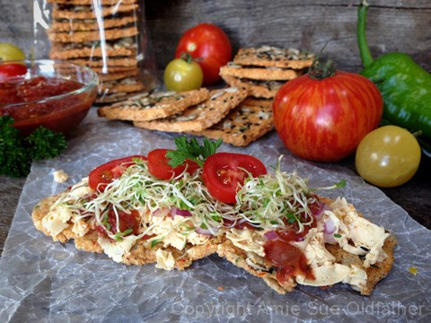
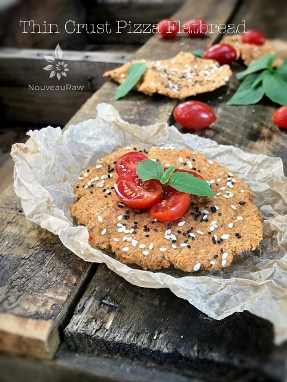
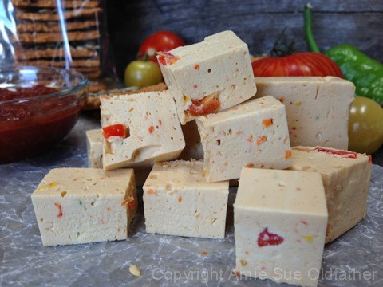

Thin Crust Pizza Flatbread with Vegan Pepper Jack Cheese Crostini’s
Today I pulled together the Raw Thin Crust Pizza Flatbread recipe and the Vegan Pepper Jack Cheese.

Bob is now addicted to my crostini’s and I, in turn, am becoming quite proficient at making them. Haha, Both recipes used in this recipe mashup do require some prep time. But both recipes are great staples to have on hand and can be used in many ways. So, don’t think that you have to just enjoy them in only one way.
This combo can be prepared as an appetizer for a gathering, a snack for after school, or even as the main dish for lunch and /or dinner.
It might just be me, but there is something more sophisticated about forming the flatbreads in such a particular manner. Yes, the same dough can easily be made into crackers and served the same way… but the thinness and shape just really takes it to a whole new level.
Take a few Raw Thin Crust Pizza Flatbreads and load them up with shredded Vegan Pepper Jack Cheese, some fresh salsa, sprouts and sliced tomatoes. Simple, delicious and beautiful. Enjoy.

Shred up some Vegan Pepper Jack Cheese and place on top…

Add some salsa, diced raw onion, sliced tomatoes, alfalfa sprouts… whatever you have!
If you want to enjoy it warmed, place the flatbread with the cheese on it only, in the dehydrator.
Warm for 15-30 minutes, then add the other toppings and enjoy!
© AmieSue.com